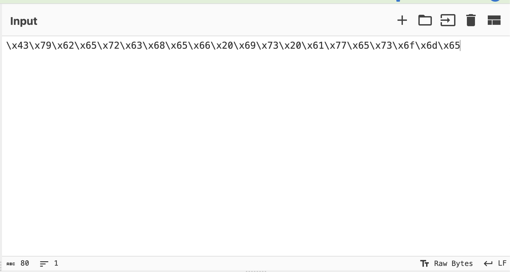

Cyberchef Example
Here's an example:

On the left you will find a palette with all the different operations possible. You will drag those onto the Recipe panel and that will operate on the Input, producing your Output.
For example, let's say we have the bytes:
\x43\x79\x62\x65\x72\x63\x68\x65\x66\x20\x69\x73\x20\x61\x77\x65\x73\x6f\x6d\x65
Go ahead and copy those bytes into the Input panel of Cyberchef.

Now go over to the left-most palette and search for hex since these look like hexadecimal bytes.
Select From Hex and drag it on to the Recipe panel.

This was a super easy one to solve.